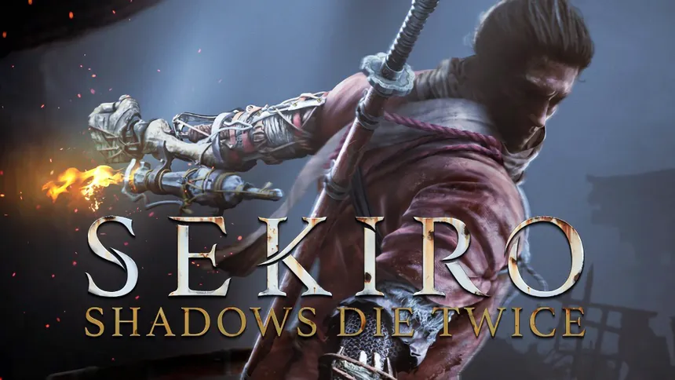
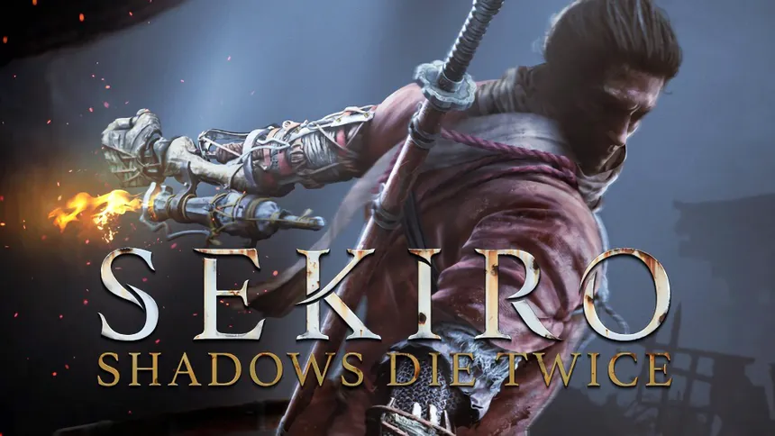

Proximos Lanzamientos
Mas vendidos
 

Sobre Nosotros:
Somos Gamer Guild, y si estás en Argentina buscando ese juego específico, el hardware que te dé una ventaja, o simplemente un lugar que hable tu idioma gamer, estás en casa. Nacimos de la necesidad de tener un local confiable que realmente entienda los gustos exigentes de los jugadores locales. Nos enfocamos en ofrecer una selección de productos que sabemos que la comunidad valora.
No solo vendemos lo que está de moda; vendemos calidad, profundidad y títulos que dejan huella. Somos tu destino para títulos profundos y aclamados, desde la intensidad narrativa de las obras de Hideo Kojima (como Death Stranding), la inmersión desafiante de sagas como Dark Souls y los juegos "Souls-like", hasta la acción vibrante y las historias inolvidables de la serie Yakuza. Por supuesto, cubrimos los grandes lanzamientos de todas las consolas y PC.
Además, entendemos que en juegos competitivos, la respuesta es todo. Por eso, manejamos las mejores marcas en teclados mecánicos, ratones de alta precisión, headsets con audio posicional claro y monitores con baja latencia. Todo lo necesario para armar un setup profesional. Como un local argentino, nos destacamos por ofrecer stock real, precios transparentes adaptados al mercado local y una atención de jugador a jugador, donde te asesoramos con conocimiento real sobre compatibilidad, rendimiento y jugabilidad. Nos esforzamos por hacer el proceso de compra sencillo y seguro. En Gamer Guild, entendemos que jugar es un compromiso serio.
Estamos acá para equipar tu pasión con lo mejor, sin vueltas.